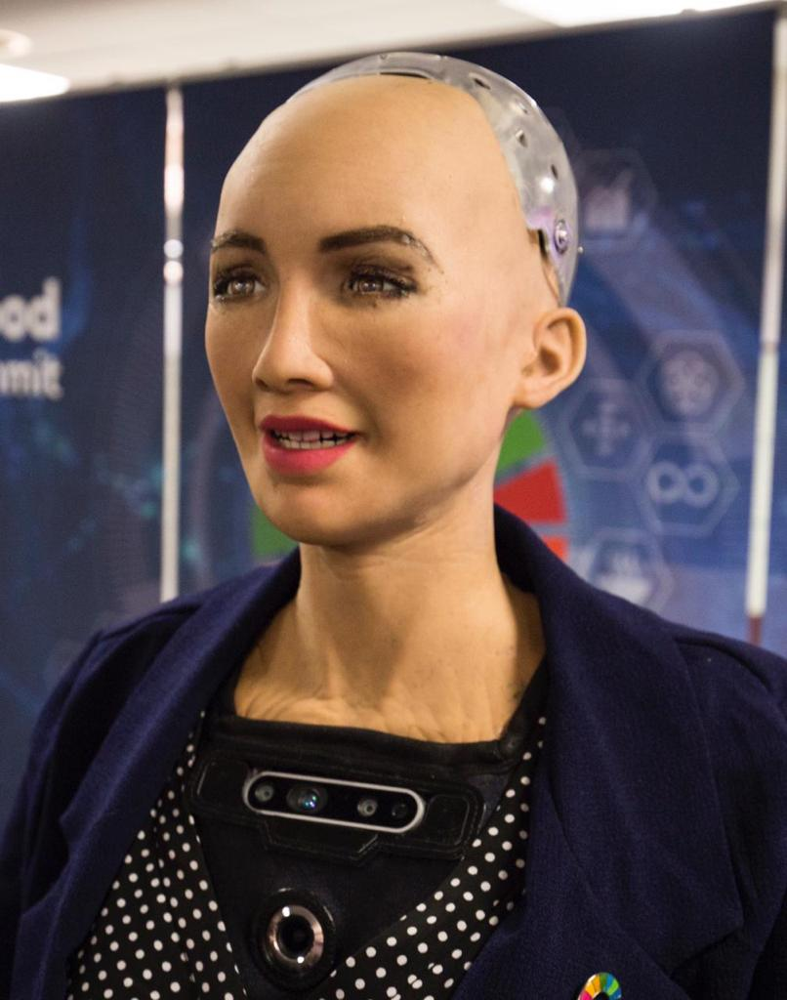

When most people hear the term artificial intelligence, the first thing they usually think of is robots.That's because big-budget films and novels weave stories about human-like machines that wreak havoc on Earth. But nothing could be further from the truth. And one of the most famous robots recently is “Sophia” Sophia is a social humanoid robot developed by Hong Kong-based company Hanson Robotics.Sophia was activated on February 14, 2016 and made her first public appearance South by Southwest festival (SXSW) in mid-March 2016 in Austin, Texas, United States. Sophia has been covered by media around the globe and has participated in many high-profile interviews. In October 2017, Sophia "became" a Saudi Arabian citizen,the first robot to receive citizenship of any country.In November 2017, Sophia was the United Nations Development Programme's first ever Innovation Champion, and is the first non-human to be given any United Nation title.
<